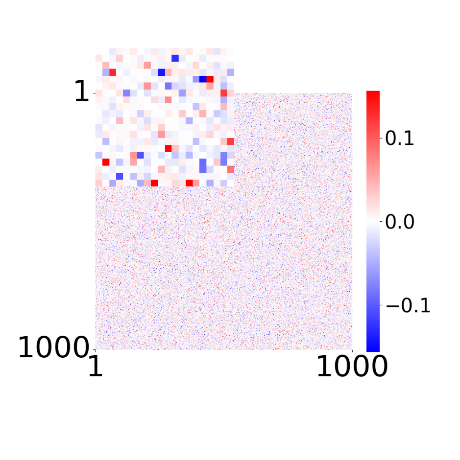
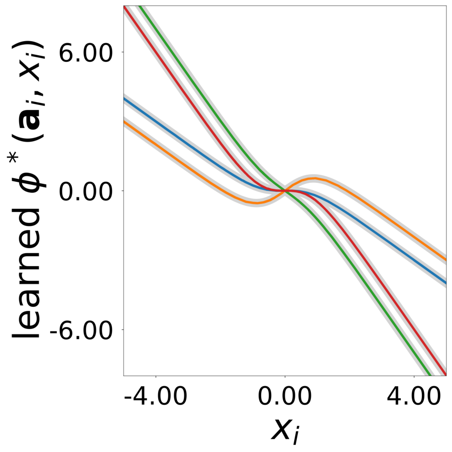
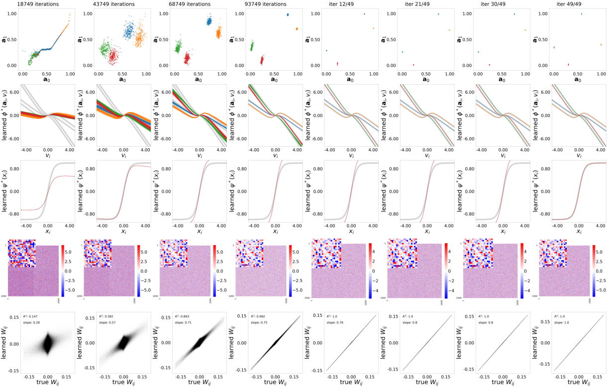
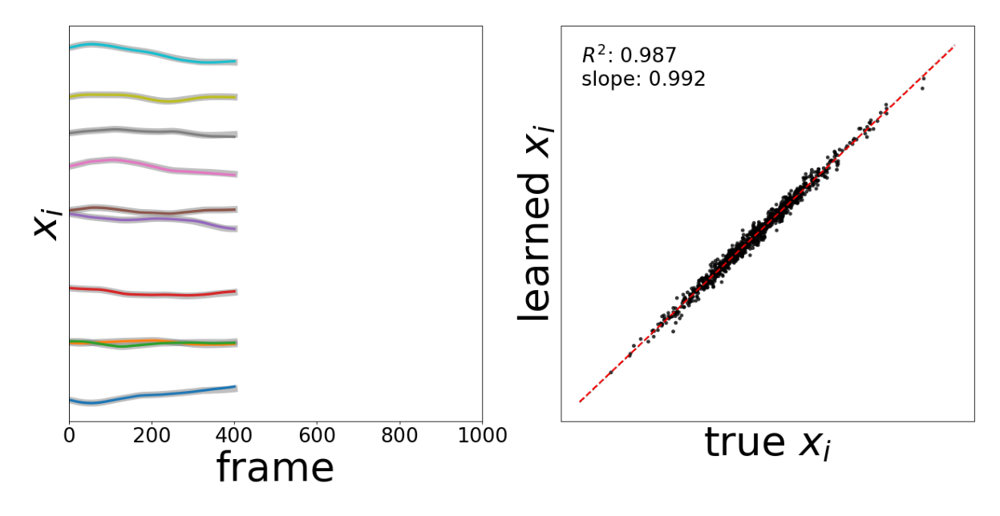
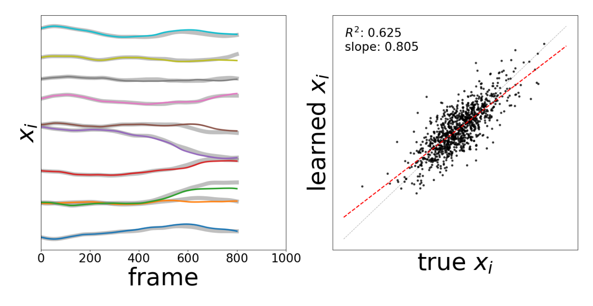

Generate synthetic neural activity data using the PDE_N2 model (src/neural-gnn/generators). This creates the training dataset with 1000 neurons of 4 different types over 100,000 time points.
Fig 2b: Sample of 100 time series taken from the activity data.

Fig 2c: True connectivity \(W_{ij}\). The inset shows 20×20 weights.
Step 2: Train GNN
Train the GNN to learn connectivity \(W\), latent embeddings \(\mathbf{a}_i\), and functions \(\phi^*, \psi^*\) with the SignalPropagation model (‘src/neural-gnn/models’). The GNN learns to predict \(dx_i/dt\) from the observed activity \(x_i\).
The GNN optimizes the update rule (Equation 3 from the paper):
where \(\phi^*\) and \(\psi^*\) are MLPs (ReLU, hidden dim=64, 3 layers). \(\mathbf{a}_i\) is a learnable 2D latent vector per neuron, and \(W\) is the learnable connectivity matrix.
Code
# STEP 2: TRAINprint()print("-"*80)print("STEP 2: TRAIN - Training GNN to learn W, embeddings, phi, psi")print("-"*80)# Check if trained model already exists (any .pt file in models folder)import globmodel_files = glob.glob(f'{log_dir}/models/*.pt')if model_files:print(f"trained model already exists at {log_dir}/models/")print("skipping training (delete models folder to retrain)")else:print(f"training for {config.training.n_epochs} epochs, {config.training.n_runs} run(s)")print(f"learning: connectivity W, latent vectors a_i, functions phi* and psi*")print(f"models: {log_dir}/models/")print(f"training plots: {log_dir}/tmp_training")print(f"tensorboard: tensorboard --logdir {log_dir}/")print() data_train( config=config, erase=False, best_model=best_model, style='color', device=device )
Step 3: GNN Evaluation
Figures matching Figure 2, and supplementary Fig 1, 2, 5, and 6 from the paper.
Figure panels:
Fig 2d: Learned connectivity matrix
Fig 2e: Comparison of learned vs true connectivity
Fig 2e: Comparison of learned and true connectivity (given \(g_i\)=10).
Fig 2f: Learned latent vectors \(a_i\) of all neurons.

Fig 2g: Learned update functions \(\phi^*(a_i, x)\). The plot shows 1000 overlaid curves, one for each vector \(a_i\). Colors indicate true neuron types. True functions are overlaid in light gray.
Fig 2h: Learned transfer function \(\psi^*(x)\), normalized to a maximum value of 1. True function is overlaid in light gray.
Step 4: GNN Training Visualization
Generate training progression figures showing how the GNN learns across epochs.
# STEP 4: GNN TRAINING VISUALIZATIONprint()print("-"*80)print("STEP 4: GNN TRAINING - Generating training progression figures")print("-"*80)print(f"generating plots for all training epochs")print(f"output: {log_dir}/results/all/")print()data_plot(config=config, config_file=config_file, epoch_list=['all'], style='color', extended='plots', device=device, apply_weight_correction=True, plot_eigen_analysis=False)# Create montage from individual epoch plotsprint()print("creating training montage (8 columns x 5 rows)...")create_training_montage(config=config, n_cols=8)

Supplementary Figure 1: Results plotted over 20 epochs. (a) Learned latent vectors \(a_i\). (b) Learned update functions \(\phi^*(a_i, x)\). (c) Learned transfer function \(\psi^*(x)\), normalized to max=1. (d) Learned connectivity \(W_{ij}\). (e) Comparison of learned and true connectivity. Colors indicate true neuron types.
Step 5: Test Model
Test the trained GNN model. Evaluates prediction accuracy and performs rollout inference.
Left panel: activity traces (ground truth gray, learned colored)
Right panel: scatter plot of true vs learned \(x_i\) with \(R^2\) and slope

Rollout comparison up to time-point 400.

Rollout comparison up to time-point 800.
Step 6: Supplementary Figure 5 - Generalization Test
Test the trained GNN with modified network structure. Modified neuron type proportions (10%, 20%, 30%, 40% instead of 25% each) and modified sparse connectivity (~25% sparsity, 243,831 weights instead of 10^6).
Outputs:
Panel b: Modified neuron type proportions histogram
Test the trained GNN with network modifications. Modified neuron type proportions: 60%, 40%, 0%, 0% (types 2 and 3 eliminated) and modified sparse connectivity: ~50% sparsity (487,401 weights instead of 10^6).
Outputs:
Panel b: Modified neuron type proportions histogram